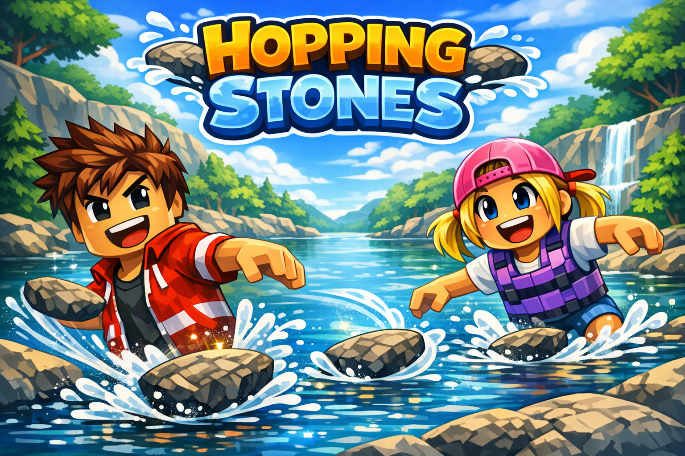
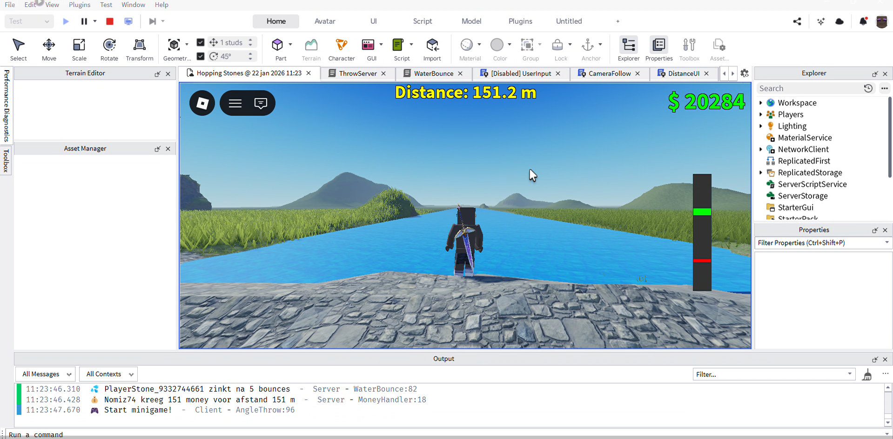
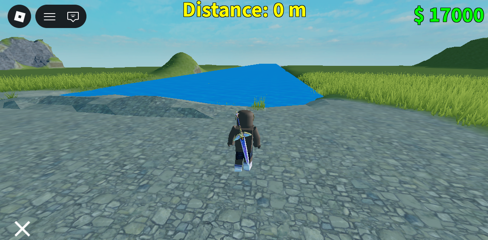

Solo Project · Roblox
Een rock skipping game in Roblox Studio: gooi je steen over het water, laat hem zo vaak mogelijk stuiteren en haal een nieuwe highscore.

Projectomschrijving
De game heeft minimaal één speelbaar level waarin je een highscore moet halen met rock skipping. Je gooit een steen over het water en laat hem zo vaak mogelijk stuiteren. Per stuiter gaat je score met 1 omhoog.
Om door te gaan naar het volgende level moet je een bepaald aantal stuiters halen. Je kunt ook naar het volgende level als de steen de overkant van het meer haalt.
Roblox is een snelgroeiend platform met miljoenen spelers wereldwijd. Steeds meer merken en bedrijven gebruiken Roblox om games of ervaringen te creëren, wat goede kansen biedt voor een ontwikkelaar zoals ik wil worden.
Mijn ambitie ligt in het ontwikkelen van creatieve games. Omdat ik al redelijke kennis heb van Unity, wil ik mijn vaardigheden uitbreiden naar een andere engine en ervaring opdoen met een nieuwe programmeertaal (Lua).
Roblox Studio is bovendien toegankelijk en relatief eenvoudig te leren, waardoor ik binnen de duur van dit keuzedeel een goed resultaat kan behalen: een speelbare game die ik kan presenteren.
Screenshots

